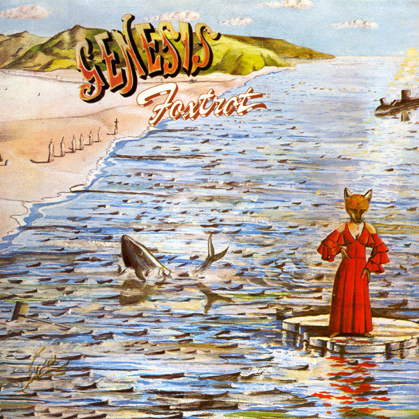

Este es el primer álbum de la banda bajo el nombre de "Genesis" y cuenta con la participación del guitarrista Anthony "Ant" Phillips y el baterista John Mayhew. Ambos abandonaron la banda tras su lanzamiento.
NURSERY CRYME
Con la incorporación de Phil Collins en la batería y Steve Hackett como guitarrista principal, es en este álbum donde comienza la exploración músical de Genesis en el género del que posteriormente se conocería como rock progresivo.
FOXTROT

El lado B del álbum consta de una sola canción de 23 minutos que es reconocida como una de las más importantes del género.
SELLING ENGLAND BY THE POUND
Este álbum es donde la formación de 5 integrantes consolida su sonido con una obra de altísima calidad.
THE LAMB LIES DOWN ON BROADWAY
El primer doble álbum de la banda, con letras escritas casi en su totalidad por Peter Gabriel, es considerado el más importante de esta etapa de Genesis. Marcó también la salida de Gabriel del grupo debido a razones personales.
A TRICK OF THE TAIL
Tras unas audiciones, la banda decide que Phil Collins debe ser quien reemplace a Peter Gabriel en las voces. Se mantiene el estilo de Genesis pero las composiciones largas y complejas que la caracterizaban.
WIND & WUTHERING
El último álbum grabado con Steve Hackett antes de su partida y la conformación definitiva del trío de Collins, Banks y Rutherford. Aún se mantiene la identidad de las obras anteriores de la banda.